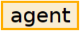
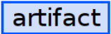
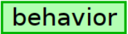

<kfam/>
— An element and generalized design language to make sense of knowledge flows from multiple perspectivesThe kfam ontology includes a lot of concepts, but you only really need to focus on three to make sense of knowledge flows: , , and . | ||
| --Test subject | ||
The knowledge flow analysis and modeling language — kfam — represents the most extreme example of the fractal nature of this approach to computer-assisted sense making.
The base language, markup, and visualizations associated with kfam have evolved over 30 years of discussions around organizational performance. New concepts and ideas around those concepts interplay with new ways to organize and control the appearance of kfam data. The result is a design language, where kfam concepts are used to name elements, attributes, colors, etc.
One view of sense making is answering the question, “How to make sense of this data? How to organize it without incessantly banging on the keyboard?”. The meaning of kfam from this perspective centers on ergonomics, the behavior of eyes and hands. Operationally, that's tuning the markup, interfaces, and bots to organize data into actionable knowledge.
When multiple datasets need the same treatment, shifting from manual to automated processes makes sense. This type of computer-assisted sense making —making sense of new data sources — would often be considered secondary deliverables, infrastructure that enables behavior, lowers costs, and improves quality.
When kfam is applied to primary activities, the questions shift to, “How do I make sense of this situation. What are we trying to accomplish? Who knows what? What doesn't know enough?”
This type of sense making focuses on making sense of a behavioral domain, the performance objectives, and the specific knowledge requirements that enable intelligent behavior.
<kfam/> element is a customized table that evolved to help the Test subject make sense of:
The ways that knowledge flows through organizations and is acted upon, operationally, planned, and implemented
The various bits and pieces of XML system architectures At its core, kfam is a language for dealing with the fractal nature of language and behavior.
Competing, multidimensional value optimizations. The variety of performance objectives and the specific knowledge requirements that enable intelligent behavior within a span of control.
When engineering markup systems, analysis of knowledge flows has impacts on architectural decisions, fine-grained markup decisions, usability, and occasionally how to deal with organizational dynamics.
By being closely associated with primary work products and being rather abstract, the meaning of kfam concepts has been highly-dynamic, making formalization an iterative process. Of all of the systems built on the prodoc platform, kfam has had the most iterations and has the most moving parts. It is the most expansive example of semantic authoring being used to create markup based on a person's conceptual models.
I started working with markup at the same time that Bo introduced me to knowledge management and Joe, values-based decision making. I couldn't untangle those conceptual frameworks with a Lampson crane. | ||
| --Test subject | ||